Mohamed Amine Khiari Enterprises
Silicon Valley VC operator, private capital connector and ecosystem builder.
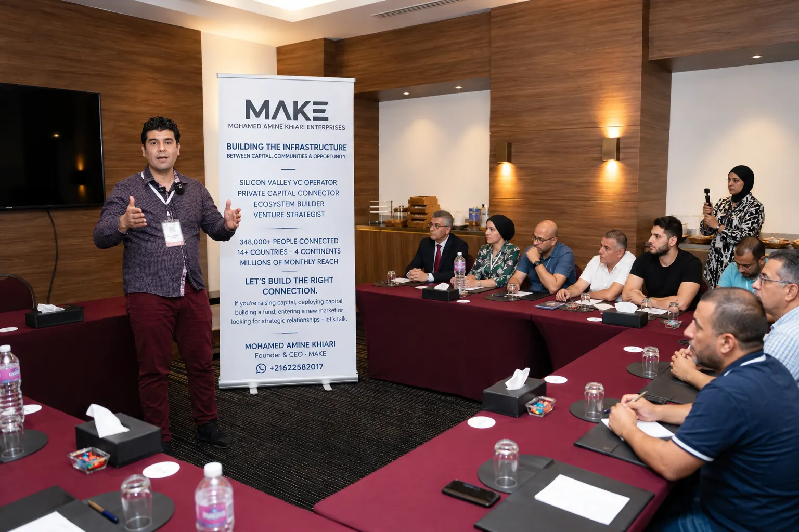
Presenting MAKE to partners and network members, Tunisia, 2026
The strongest evidence here isn't follower count. It's what has actually been built: communities that reached hundreds of thousands of professionals, relationships developed inside Silicon Valley's venture ecosystem, access to private-capital rooms, and institutional platforms and intellectual property that now operate independently.
Mohamed Amine's path moved from building audiences, to building communities, to building relationships, to accessing private-capital environments, to building institutional intelligence and venture-capital frameworks — and now, capital infrastructure.
The easiest way to understand the work is to look at what has actually been built. Every figure below is sourced to the platform it comes from.
Step 01 — He built the network
A professional distribution infrastructure built across communities, platforms and markets.
Network footprint reflects the broader professional network accumulated across communities, platforms and relationships. Documented platform footprint reflects individually verified platform-level figures currently in the evidence room. These two figures are not additive — audiences overlap and the network figure includes reach not yet broken out by platform.
Year-by-year historical figures aren't yet documented platform-by-platform, so no growth chart is shown here rather than an invented one.
The network creates distribution. The work is turning distribution into relationships, relationships into trust, and trust into opportunity.
In November 2021, Mohamed Amine was accepted into the VC Lab program — an accelerator the acceptance letter describes as admitting roughly 1 in 50 applicants. The program covers venture-capital best practices, fund formation, LP/GP dynamics, thesis development and fundraising.
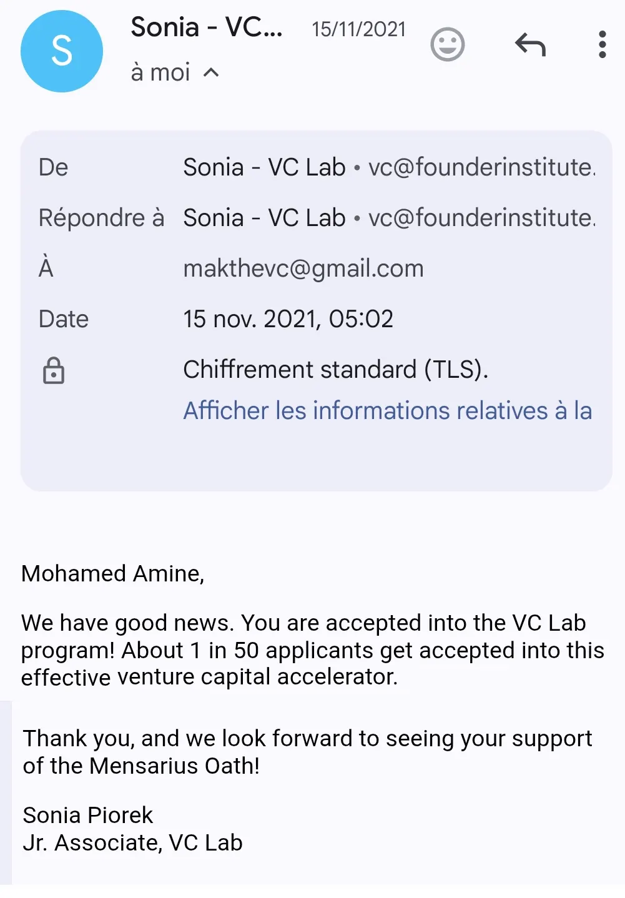
Training & mentors
i was mentored by Adeo Ressi himself . Trained in the VC Lab accelerator, a Silicon Valley program created by Adeo Ressi that helps new managers launch venture capital firms in about six months. Links : https://www.linkedin.com/in/adeoressi
Adeo Ressi is a serial entrepreneur and venture‑capital builder behind the Founder Institute (a global pre‑seed startup accelerator) and VC Lab.
He is also known as one of Elon Musk’s closest friends from their University of Pennsylvania days; they were college housemates, and Ressi accompanied Musk on early trips to Moscow to explore buying rockets, helping lay the groundwork for what became SpaceX. https://www.dailymail.com/sciencetech/article-3082067/Russian-space-bosses-SPAT-Elon-Musk-tried-buy-rocket-persuading-build-new-book-reveals.html
NETWORK VC PARTNER — see LinkedIn profile for role reference.
Mohamed Amine has organized and facilitated invitation-only investment and networking environments, connecting qualified members of his network with family offices, investors, fund managers and institutional decision-makers.
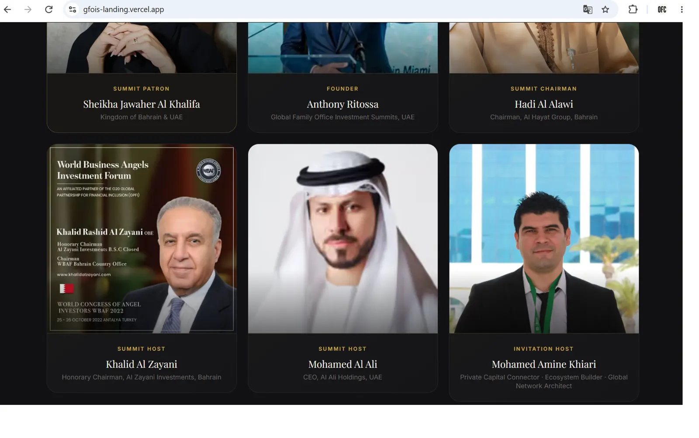
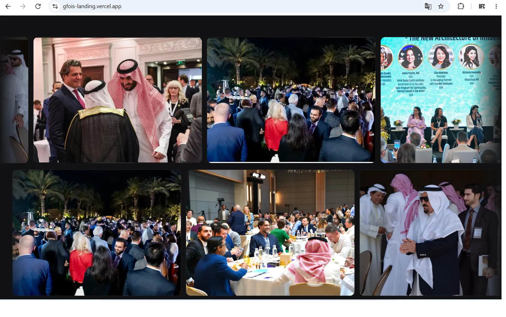
The objective is not to create bigger rooms. It is to create better rooms.
CEO & Co-Founder
Building infrastructure for cross-border venture capital.
A next-generation Fund of Funds platform designed to connect global capital with venture managers and opportunities across Europe, the Middle East and Africa — launching with a proposed $1B Fund of Funds strategy.
Focused on emerging managers, first-time GPs, established venture managers, strategic co-investments and cross-border capital allocation.
Intelligence for people who allocate capital.
Institutional investors do not need more information. They need better frameworks for interpreting information.
3,234+ LPs, GPs, family offices, HNWIs and institutional investors read research on venture capital, capital allocation, emerging managers and LP decision-making.
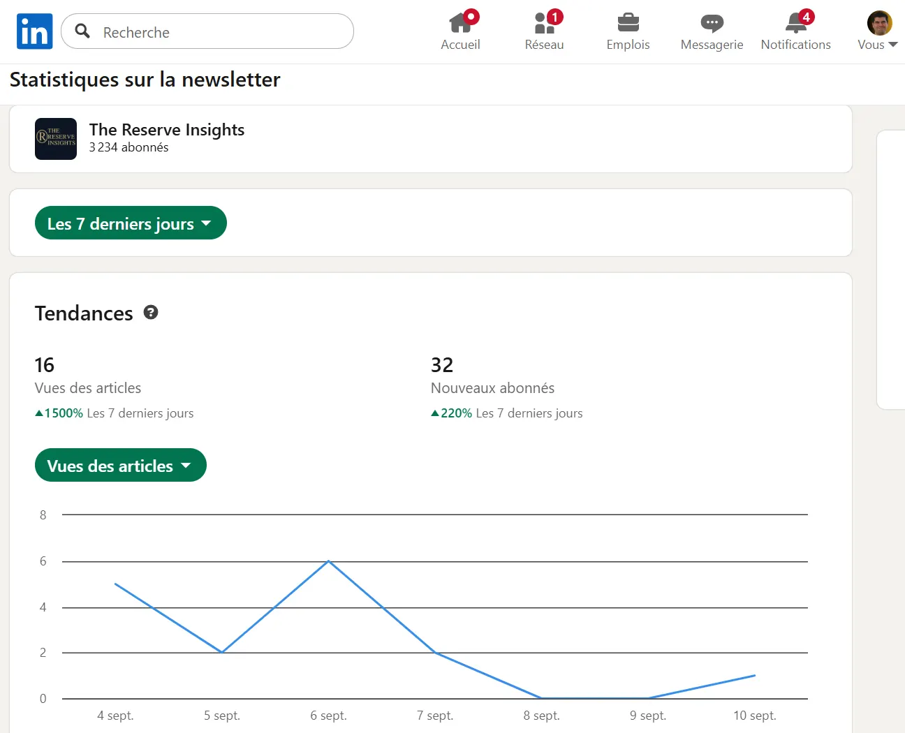
Don't just raise a fund. Build an institution allocators can understand, remember and defend.
OWN YOUR FUND CATEGORY™ - Access
𝐈𝐧𝐬𝐭𝐢𝐭𝐮𝐭𝐢𝐨𝐧𝐚𝐥 𝐚𝐜𝐜𝐞𝐬𝐬 𝐥𝐚𝐲𝐞𝐫 𝐟𝐨𝐫 𝐞𝐦𝐞𝐫𝐠𝐢𝐧𝐠 𝐯𝐞𝐧𝐭𝐮𝐫𝐞 𝐟𝐮𝐧𝐝𝐬 𝐚𝐧𝐝 𝐚𝐥𝐥𝐨𝐜𝐚𝐭𝐨𝐫𝐬.
OWN YOUR FUND CATEGORY™ is a category architecture system designed to make venture funds 𝐥𝐞𝐠𝐢𝐛𝐥𝐞, 𝐝𝐞𝐟𝐞𝐧𝐬𝐢𝐛𝐥𝐞, 𝐚𝐧𝐝 𝐢𝐧𝐯𝐞𝐬𝐭𝐚𝐛𝐥𝐞 before traditional LP diligence begins.
This is not a general scheduling page.
It is a 𝐬𝐭𝐫𝐮𝐜𝐭𝐮𝐫𝐞𝐝 𝐚𝐜𝐜𝐞𝐬𝐬 point for "GP - Request Access Session" & LPs "LP / Allocator - Strategic Conversation" :
The operating platform behind the work — not a traditional consulting firm.
Emerging ecosystems don't usually suffer from a lack of talent. They suffer from a translation problem: exceptional founders, companies and funds remain invisible to global capital because their value isn't translated into a language investors and institutions can understand, trust and defend. That is the problem this work is built to solve — connecting Tunisia, Silicon Valley, Africa and EMEA.
Primary-source screenshots and documents behind the claims made on this page. The Reserve Capital and Own Your Fund Category™ evidence still needs a public-facing asset — see the open items list.
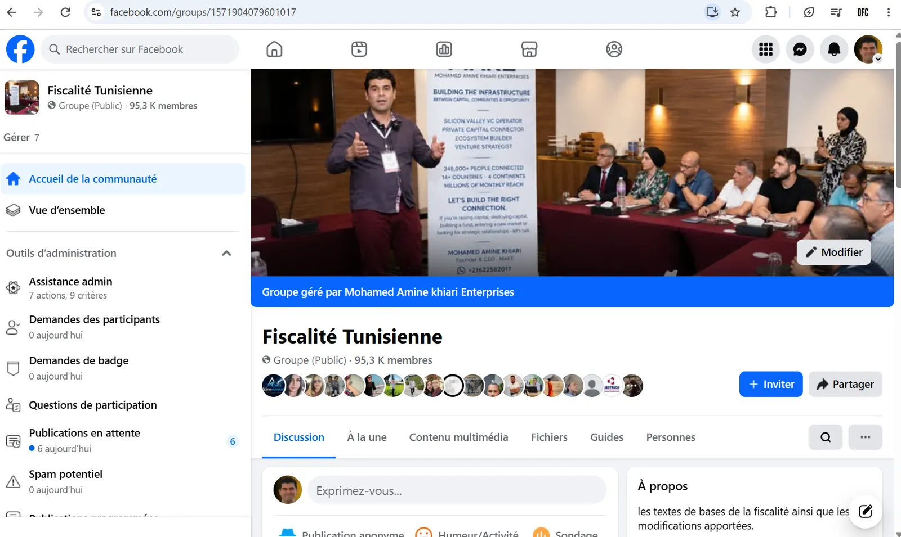
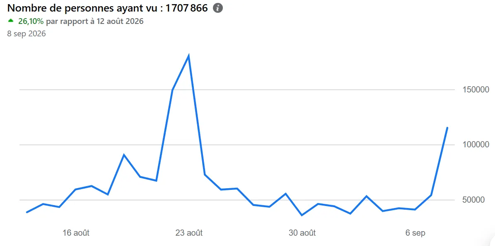
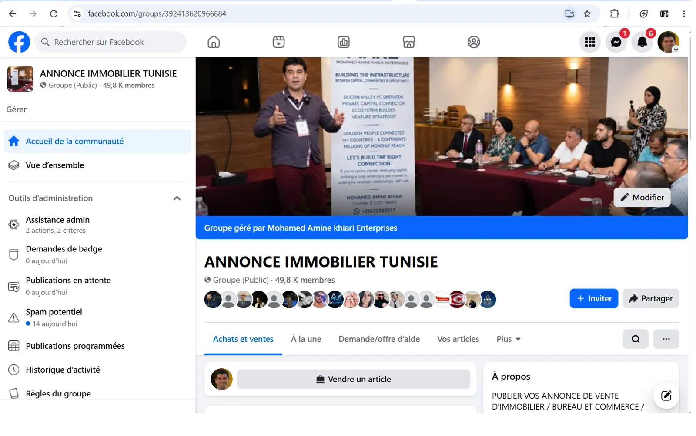
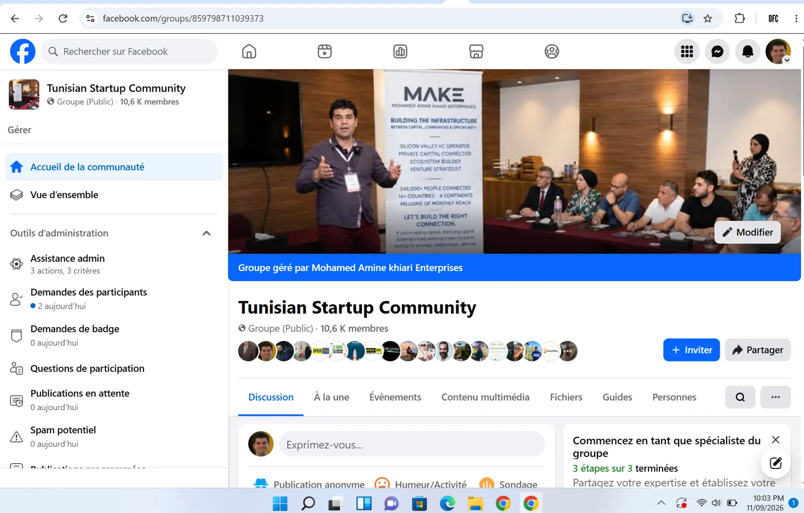
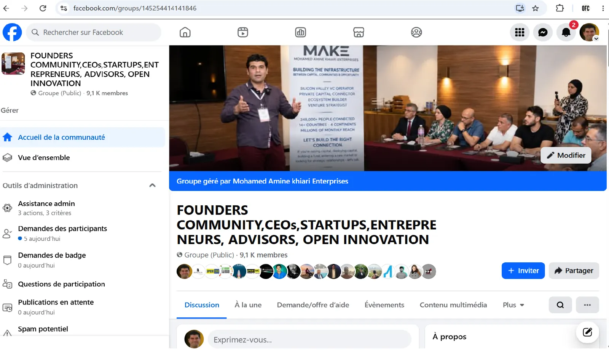
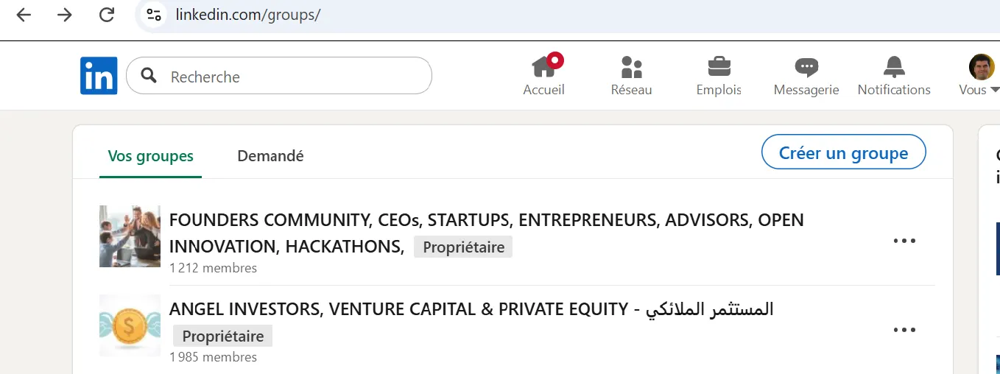
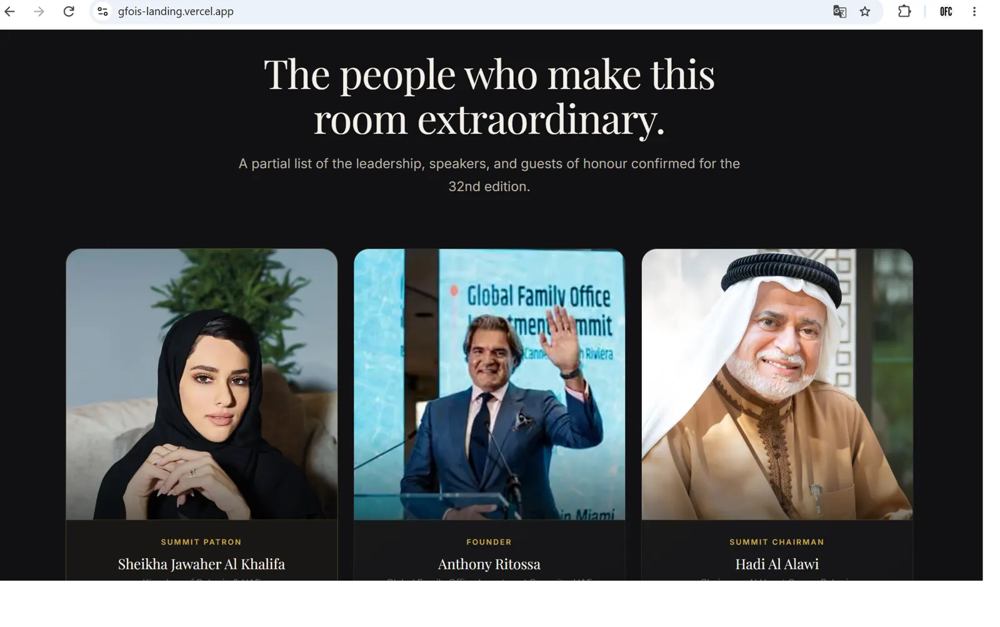
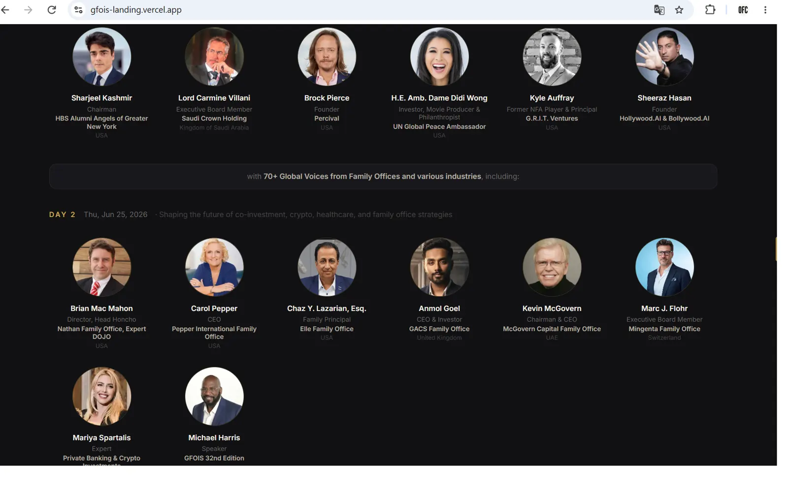
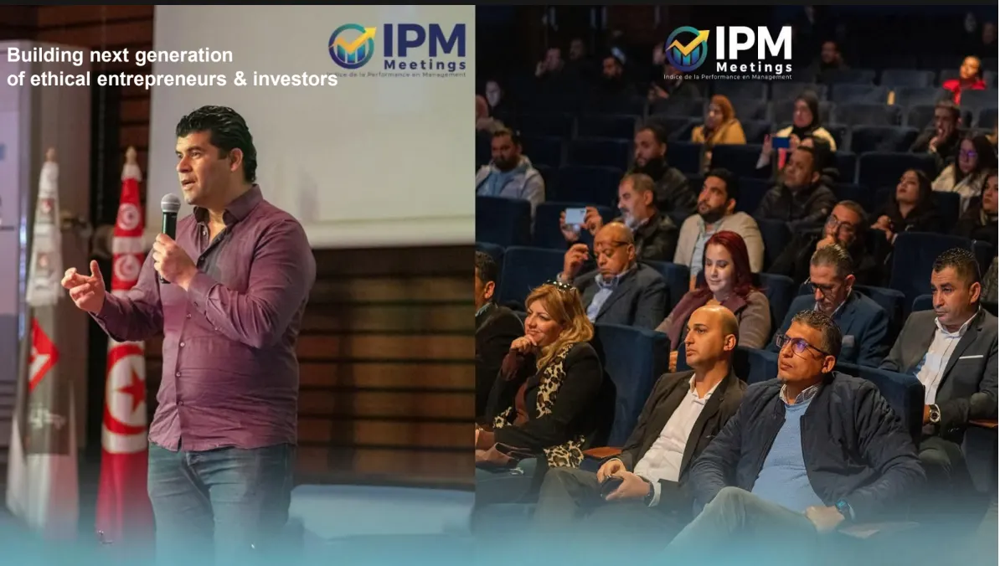
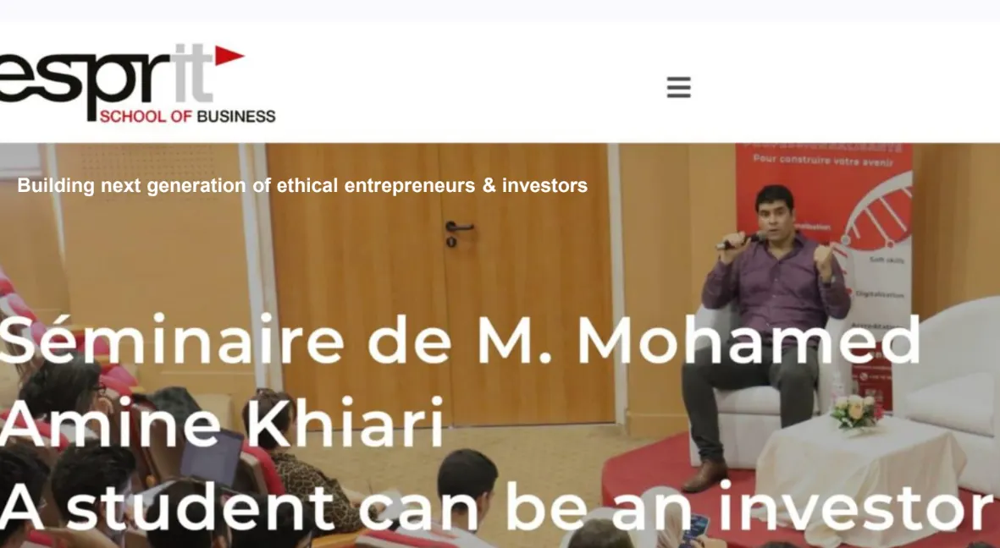
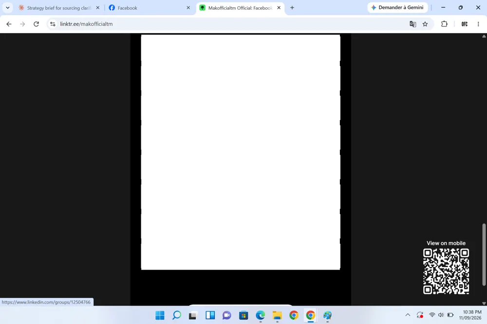
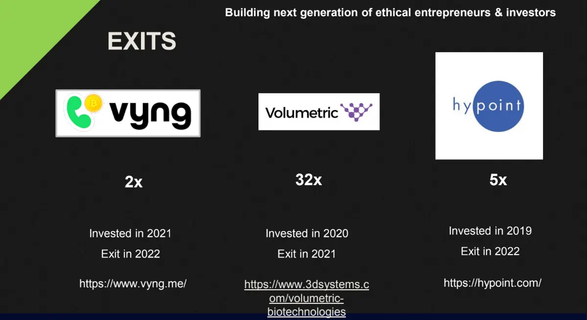
They require the right people, the right positioning and the right network. MAKE works best with founders, investors, fund managers, institutions and ecosystem leaders building something ambitious.
They can book a slot at their convenience here: https://calendly.com/makofficialtm